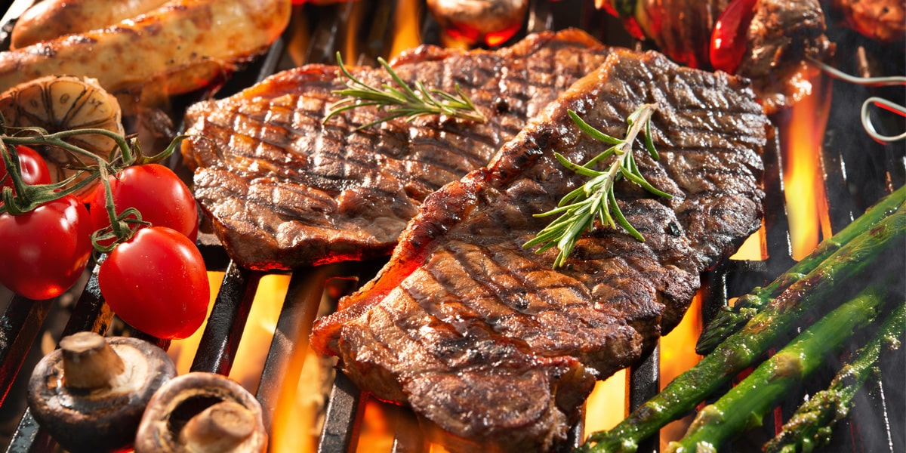
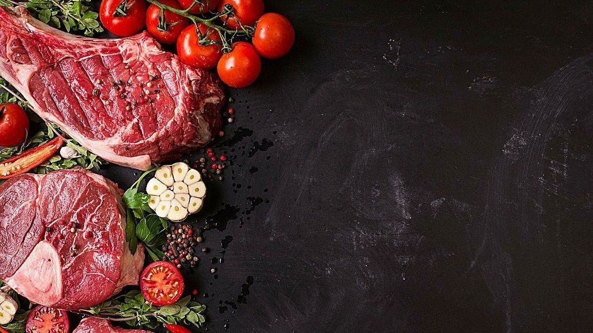

Estilo de Cortes
- El solomillo es uno de los cortes más reconocidos. Es una carne magra y que se presta para poder hacerla a la parrilla, plancha o meterla en el horno.
- Lomo alto es una carne que se puede preparar igual que el solomillo y que resulta muy jugosa y tierna. Además, se caracteriza por tener poca grasa.
- Lomo bajo se encuentra en la parte trasera y también es una carne jugosa e ideal si se buscan cortes con poca grasa.
- Tapillaes un corte que se hace cerca de la cadera del animal y es una carne magra. Esta parte del animal se puede usar para asar y freír.
- La cadera se puede utilizar en diferentes elaboraciones como para hacer al horno, freír o hacerla en filetes que podemos rebozar. Es una carne bastante tierna.
- Brazuelo se usa como norma general para guisos y caldos. Se caracteriza por la presencia de nervios y porque necesita de una cocción larga para que quede perfecta.
- En la espaldilla podemos diferenciar dos cortes distintos. Uno de ellos conocido como plana es de donde se saca lo que se conoce como solomillo del pobre. Esta pieza tiene bastante grasa.
- La costilla es el corte más usado para asar pues la carne se encuentra pegada al hueso y la grasa que contiene le da un sabor increíble.
Consejos de Preparación
¡Saca el mejor sabor a tus cortes!
Técnicas de Preparación
Marinado
Marinar la carne no solo añade sabor, si no que también ayuda a ablandar los cortes más duros. A continuación algunos consejos que serán de tu ayuda:
1.- Utiliza una combinación de ácido (como vinagre o jugo de limón), aceite y especias.
2.- Marina la carne en el refrigerador durante al menos 2 horas, o toda la noche para obtener mejores resultados.
3.- Descarta el marinado usado para evitar la contaminación cruzada.
Salado y curado
El salado y curado son métodos tradicionales para preservar la carne y añadir sabor:
1.-Salado en Seco: Frotar la carne con sal y especias y dejar reposar durante varias horas antes de cocinar.
2.-Curado Húmedo: Sumergir la carne en una solución salina (salmuera) para mejorar la textura y sabor.
Técnicas de Cocción
Diferentes cortes de carne requieren distintas técnicas de cocción para resaltar lo mejor de cada uno.
Asado: Ideal para cortes grandes como el lomo y las costillas. Cocinar a fuego lento y constante asegura una carne tierna.
Parrilla: Perfecta para cortes delgados como chuletas y pechugas de pollo. Cocinar a fuego alto para sellar los jugos.
Guisado: Utilizado para cortes más duros como el pecho de res y los muslos de pollo. Cocinar lentamente en líquido para descomponer las fibras y obtener una carne tierna.
Freído: Ideal para panceta y alitas de pollo, proporcionando una textura crujiente y sabrosa.
Consejos Adicionales
Temperatura de Carne
Carne de cerdo: 65°C
Carne de res (punto medio): 60°C
Reposo de la carne
Deja reposar la carne después de cocinarla para que los jugos se redistribuyan y la carne quede más jugosa. Generalmente, se recomienda dejar reposar la carne durante 5-10 minutos antes de cortarla.
Nosotros
En "El Filete Travieso" llevamos más de 10 años ofreciendo los mejores cortes de carne con la calidad y frescura que nuestros clientes merecen. Nuestra historia nace como un pequeño negocio familiar, fundado con el objetivo de brindar productos cárnicos de primera calidad y un servicio cálido que hiciera sentir a cada cliente como en casa. Nos especializamos en una amplia variedad de estilo de cortes, como filetes, chuletas y costillas, seleccionados cuidadosamente para garantizar su frescura y sabor excepcional. Además, combinamos la tradición con la innovación al ofrecer consejos de preparación que transforman cualquier platillo en una experiencia culinaria única. No solo vendemos carne; compartimos nuestra pasión por la calidad, la tradición y el buen servicio. Nuestra misión es poner en la mesa de cada cliente productos que no solo nutran, sino que también reúnan a las familias en torno a momentos especiales. Hoy, seguimos comprometidos con nuestros valores de honestidad, trabajo duro y atención al detalle, porque creemos que cada corte cuenta una historia, y cada cliente es parte de la nuestra.
Contáctanos
Tel: +52 229 456 7890
Email: Elfiletetravieso@outlook.com.mx
Dirección: Calle de los Filetes Finos #2560, Veracruz Ver, CP 91779
Horario: Lunes a Sábado: 9:00 AM - 8:00 PM